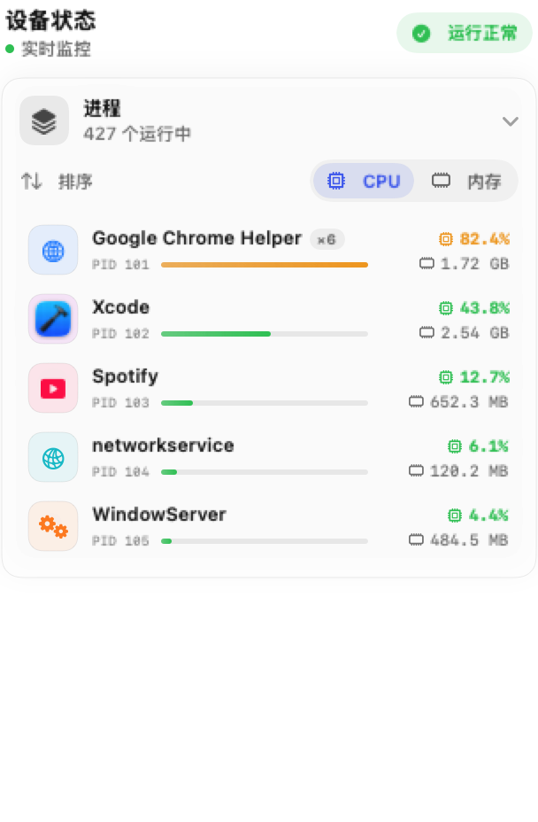
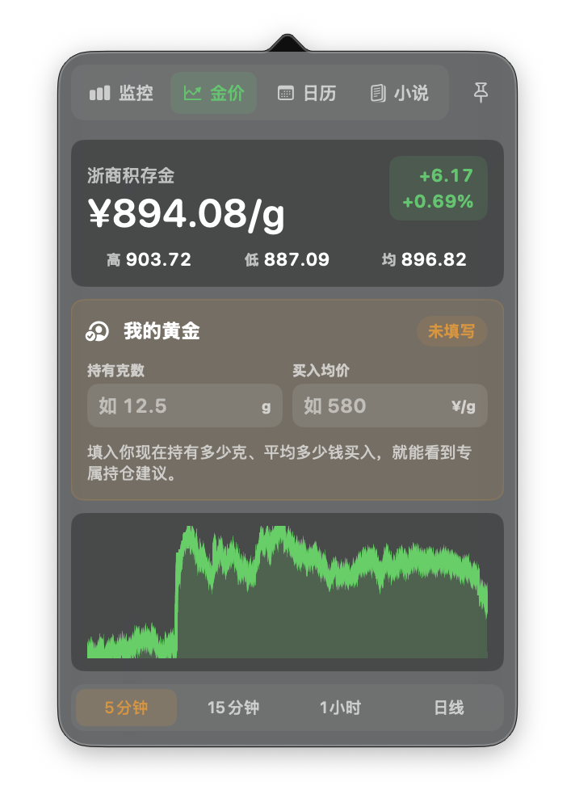

睡眠与耗电找到阻止休眠的进程
需留意
电源断言 · Wake · Dark Wake · 电量变化
原生 Mac 诊断与菜单栏工具
Mac 合盖后为什么掉电，Wi-Fi 满格为什么没网，System Data 到底占在哪里，卸载应用还留下了什么——CoolRun 把诊断和日常工具收进菜单栏，需要时展开，不用时隐身。
点击上方标签，看看它能装下什么
从状态数字找到异常方向
睡眠、网络与存储分层检查
只读优先，清理仅进废纸篓
诊断摘要和个人记录留在本机
Mac Diagnostics
四条诊断路径都按需运行。能确认的直接说明，无法访问的范围明确标记，任何清理都把决定权留给用户。
电源断言 · Wake · Dark Wake · 电量变化
接口 · 网关 · DNS · Ping · HTTPS · VPN
缓存 · 日志 · 容器 · 开发文件 · 设备备份
严格匹配 · 二次确认 · 路径复核 · 移入废纸篓
诊断之外，七种日常
选择一个场景，右侧就是 CoolRun 当前版本的真实界面。
按 CPU 或内存排序，同名进程可以合并查看，也能在确认后结束进程。

价格走势、RSI、MACD、支撑与压力，以及自己的成本和浮盈浮亏，都放在一起。

统一查看 Codex 与 Claude Code，并把剩余比例、重置时间和使用节奏讲清楚。
覆盖日常到 TOEFL 的分级内容，记录掌握度、收藏、连续学习天数和待复习项目。
查看节假日与调休，为生日、考试或纪念日创建一次性或每年重复的提醒。
按工作、生活等分组整理，支持全文搜索、固定与安全删除；删除分组不会误删其中的备忘。
自动去重并保留最多 200 条，支持搜索、固定、重新复制和暂停记录，所有内容只存在当前 Mac。
金价分析，不止报数
CoolRun 会记录历史价格，整理走势、波动率、均线、RSI 与 MACD，再给出“观望为主”“不建议追买”“盈利可分批落袋”这样的直白说明。
仅用于信息展示和个人记录，不构成投资建议。
价格会变，判断需要上下文。
为什么放在菜单栏
默认常驻菜单栏，需要时左键展开；右键则能直接进入快捷操作。
点一下图钉，悬浮窗不会因为切换应用而关闭，适合边工作边查看。
使用 SwiftUI + AppKit 构建，跟随浅色与深色模式，也支持四种界面语言。
小体积，完整日常
温度、网络、储存、电池、内存压力和运行时间。
排查睡眠唤醒、网络分层、System Data 与应用残留。
输入持有克数与买入均价，数据保存在本机。
默认关闭，只有主动开启后才会请求通知权限。
macOS 系统语音，也支持高级用户配置本机 Kokoro TTS。
节假日、调休、生日和支持闰月的倒数日。
菜单栏显示内容、刷新频率、动画和监控模块都能调整。
25 种金币组合
5 种金币外观可以搭配 5 种动作；CPU 越忙，金币也越来劲。仍然可以关闭动画，或切到节能档。
Source available on GitHub
CoolRun 公开源代码供审查、学习和非商业使用；任何商业用途都需要事先取得书面授权。
$ git clone \
github.com/kuaoaoaoao/CoolRun
$ open CoolRun.xcodeproj
# 选择 My Mac，然后运行Public on GitHub
仓库已经公开。这里直接展示 GitHub Star 的增长记录，也欢迎把 CoolRun 分享给同样喜欢菜单栏小工具的人。
去 GitHub 点个 Star三步开始
当前 Release 直接提供 DMG，安装不需要终端命令。
从 GitHub Releases 下载最新的 CoolRun.dmg。
打开 DMG，把 CoolRun.app 拖进 Applications。
首次被拦截时，到“隐私与安全性”选择“仍要打开”。